Copyright (c) 2004 笠原 基之
日本には EPWING や電子ブック形式の CD-ROM 書籍が数多く存在し、 商用、フリーを問わず様々な閲覧ソフトが開発されてきました。
閲覧ソフトの一部には、「ebzip 形式」と呼ばれるデータ圧縮形式に対応した ものがあります。 EPWING や電子ブックのデータを ebzip 形式で圧縮しておけば、普段のデータ 容量は少なくて済みます。 特に、フラッシュメモリや容量の少ないハードディスク上に書籍データを 置いている PDA などでは、書籍データの圧縮は非常に重宝します。
WinEBZip は、CD-ROM 書籍を ebzip 形式で圧縮したり、反対に伸長した書籍を 伸長したりする事のできるソフトウェアです。 Windows 2000, XP 等で動作します。
公式ホームページは、以下の場所にあります。
WinEBZip の公式ホームページ:
http://www.sra.co.jp/people/m-kasahr/winebzip/
WinEBZip を実行するには、あらかじめ 「.NET Framework ランタイムライブラリ日本語版」と「EB ライブラリ」 をインストールしておく 必要があります。
.NET Framework ランタイムライブラリ日本語版は、Windows Update で インストールする事ができます。
EB ライブラリについては、公式ホームページが以下の場所にあります。 ここから、EB ライブラリの Windows 版バイナリを入手できますので、 あらかじめインストールして下さい。
EB ライブラリの公式ホームページ:
http://www.sra.co.jp/people/m-kasahr/eb/
なお、EB ライブラリは、バージョン 4.1.2 かもしくはそれ以降のバージョンを お使い下さい。
はじめて WinEBZip を起動したときは、次のように EB ライブラリの インストールしているフォルダの位置を聞いてきます。
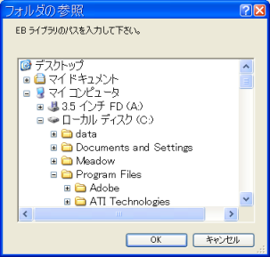
EB ライブラリをインストールした際に、インストール場所を変更
しなかった場合は、"C:\Program Files\EB Library" のような
フォルダになるはずです。
正しく入力すると、WinEBZip のメイン画面が表示されます (次項 参照)。
なお、二回目以降に WinEBZip を起動したときでも、EB ライブラリが 見つからないと、やはりインストール先を聞いてきます (EB ライブラリをアンインストールした場合など)。 再度指定し直して下さい。
実行した直後、WinEBZip のメイン画面は次のようになっています。 まだ CD-ROM 書籍を開いていないので、ほとんど空白になっています。
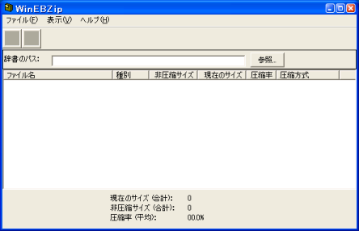
圧縮や伸長を行うには、CD-ROM 書籍を開く必要があります。 また、既に圧縮された CD-ROM 書籍も、開く事によって現在の圧縮状況を 確認する事ができます。 CD-ROM 書籍を開くには、「書籍のパス:」と書かれた列の右端にある、 「参照...」ボタンを押して下さい。 (または、メニューバーの「ファイル」→「書籍を開く...」を選んでも、 同じ動作をします。) すると、フォルダを選択する画面が表示されます。
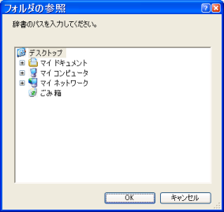
ここで、CD-ROM 書籍のフォルダを指定します。
「CD-ROM 書籍」のデータはフォルダが複数階層に分かれていますが、
一番上のフォルダを指定します。
このフォルダには必ず CATALOG もしくは CATALOGS
という名前のファイルが存在します。
(書籍によっては、ファイル名は小文字かも知れません。)
このファイルが存在するフォルダを指定して下さい。
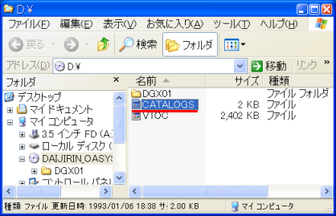
EPWING や電子ブックは CD-ROM で販売されていたため、ここでは便宜上 「CD-ROM 書籍」と呼んでいますが、もちろんデータの内容をハードディスク等 にコピーした場合も、WinEBZip で扱う事が可能です。
正しいフォルダ位置を指定すると、メイン画面に CD-ROM 書籍の各ファイル について、現在の圧縮状況が表示されます。
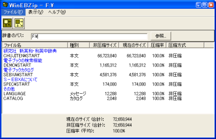
EPWING や電子ブックの一部には、最初から圧縮された状態で販売されている ものもあります。 これらの書籍を WinEBZip で開くと、圧縮方式の欄に「EPWING 形式」 「S-EBXA 形式」と表示されます。 ebzip 形式で圧縮したものは、「ebzip レベル 0」のように表示されます。
圧縮・伸長を行うには、あらかじめ CD-ROM 書籍を開いておきます。
ツールバー上に、圧縮と伸長のボタンがありますので、行いたい処理に 合わせてボタンを押します。 メニューバーの「ファイル」にも「圧縮」と「伸長」がありますので、 そちらから行っても同じです。
すると、次のような画面が表示されます。 これから行う圧縮や伸長についての様々な設定を、ここで行います。
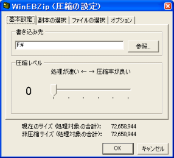
EPWING 形式、S-EBXA 形式で圧縮されている書籍に対して、圧縮を行う事も 可能です。 この場合、WinEBZip は自動的にいったん伸長してから ebzip 形式で圧縮し直し ます。
圧縮・伸長処理を施したファイルを書き込むフォルダ位置を指定します。 「参照...」ボタンを押すと、CD-ROM 書籍を開くときと同じように フォルダの選択画面が表示さますので、書き込み先を指定して下さい。 開いた CD-ROM 書籍と同じ場所を指定することもできます。
ヒント: CD-ROM には書き込めませんので、 開いている CD-ROM 書籍と同じ場所を「書き込み先」に指定するのは、すでに ハードディスクにコピーしている CD-ROM書籍を圧縮・伸長する場合だけです。
ヒント: 開いている CD-ROM 書籍と同じ場所を「書き込み先」に指定する場合、 オプション の「元のファイルを削除する」は 必ず有効にしましょう。 でないと、圧縮・伸長の処理の後で、元のファイルと処理によって生成された ファイルが同じ場所に混在してしまいます。
高いレベルを選ぶほど、圧縮後のファイルが小さくなります。 けれどもその代償として、閲覧ソフトがファイルを伸長する際に、処理時間が 少し余計にかかってしまいます。
ヒント: どれを選べば良いかよく分からなければ、4 あたりを指定しましょう。 (ただし、非力なパソコンでは、もう少し下げたほうがいいかも知れません。)
なお、圧縮レベルが指定できるのは圧縮時だけです。 伸長時には指定できません。
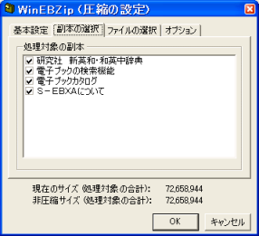
EPWING や電子ブックでは、一つの製品 (1 枚の CD-ROM) の中に複数個の 「書籍」を収めていることが少なくありません。 WinEBZip では、一つの製品に収録されている個々の書籍を「副本」と呼んで います。
「対象処理の副本」欄では、圧縮・伸長処理の対象とする副本を取捨選択します。 選ばなかった副本に属するファイルは圧縮や伸長が一切行われず、副本そのもの が書き込み先では欠落することになります。 その分、書き込み先のデータ容量は減ります。 取捨選択を行うと、処理対象となる書籍データの合計サイズが変化しますので、 目安にして下さい。
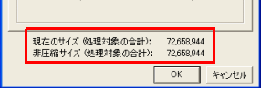
ただし、 開いている CD-ROM 書籍と同じ場所に書き込む場合、副本を非選択 にしてもデータ容量は減りません。 非選択にした副本のファイルは、削除されずにそのまま残るからです。
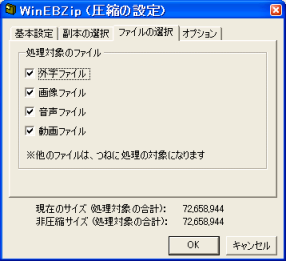
一部の書籍では、画像データや音声データがファイルとして独立しています。 利用者が望むなら、これらのファイルを圧縮・伸長の対象から除外することで、 処理対象となるデータの合計サイズを減らすことができます。
なお、処理対象に選んでも、必ずしも圧縮が行われるわけではなく、 たんに書き込み先に元と同じデータがコピーされる場合もあります。 画像データや動画データは、すでにデータ自体に圧縮がかかっているため、 ebzip 形式で再度圧縮してもサイズの縮小が期待できないためです。
副本の選択と同様に、 選ばなかったファイルは圧縮や伸長が一切行われず、書き込み先では当該 ファイルが欠落することになります。
また、これも副本の選択と同様ですが、 開いている CD-ROM 書籍と同じ場所に書き込む場合、ファイルを非選択 にしてもデータ容量は減りません。 非選択にしたファイルは、削除されずにそのまま残るからです。
ヒント: 書籍によっては、外字がないと本文がまともに読めないもの少なくないので、 少なくとも、外字ファイルだけは選択しておくことをお薦めします。
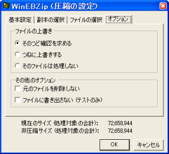
書き込み先のファイルが既に存在していた場合、どうするのかを指定します。
このオプションを有効にしなければ、圧縮・伸長後に元のファイルは削除 されます。 CD-ROM 上のファイルは削除しようとしても失敗しますが、削除に失敗しても 圧縮・伸長処理は続行されるので、あまり気にする必要はありません。
開いた CD-ROM 書籍と同じ場所を「書き込み先」に指定している場合は、 必ず元のファイルを削除して下さい。 でないと、圧縮・伸長の処理の後で、元のファイルと処理によって生成された ファイルが同じ場所に混在してしまいます。
圧縮・伸長のテストを行うだけで、実際にファイルには書き出しません。
あまり利用する機会はないと思いますが、 圧縮時に利用すると、圧縮後に実際にどれくらいのデータ容量になるのかが 分かります。 また、圧縮済みの書籍に対して伸長する時に利用すると、圧縮データが壊れて いないか確認できます。
圧縮・伸長の設定が済んで、実行を開始すると、進行状況を示す画面が 表示されます。
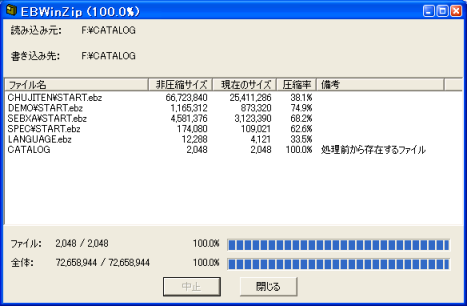
処理が正常に完了し画面の「閉じる」ボタンを押すか、処理中に「中止」 のボタンを押すと、メイン画面に戻ります。 正常に完了したときは、メイン画面には書き込み先の書籍の圧縮状況が表示 されます。
中止の場合は、書き込み元の書籍の圧縮状況が表示されます。 ただし、「元のファイルを削除しない」オプションを無効にしていた場合、 書き込み元の書籍は整合性が失われ、エラーが表示される可能性があります。
VTOC や
電子ブックの SOUND など) は、無視されます。
メイン画面のファイル一覧にも表れませんし、圧縮・伸長の際にも処理は
行われません。
考えられる原因と対処方法:
Windows 95/98/Me および Windows NT 等では動かないと思います。
Windowd Update でインストールしましょう。
考えられる原因と対処方法:
まず、ライブラリのバージョンを確認しましょう。 複数の EB ライブラリをインストールしている場合は、古いほうを指定して いないか確認して下さい。
仕様が細かくことなるかも知れません。 WinEBZip では、EB ライブラリの公式サイトで配布している物以外での 動作は検証していません。
また、EB ライブラリをソースコードから自力でビルドした場合、インストール の際にファイルの配置が WinEBZip の期待している形と違うかも知れません。 公式サイトのバイナリと合わせるか、WinEBZip では公式サイトのバイナリを 使うようにして下さい。
考えられる原因と対処方法:
非圧縮と圧縮ファイルが同じフォルダに同居してしまっている場合、 非圧縮のファイルを優先的に認識するようになっています。 (閲覧ソフトにとっては、読み込む際に伸長処理をせずに済むからです。)
「元のファイルを削除する」オプション を有効に して、圧縮をやり直しましょう。
WinEBZip はフリーソフトウェアです。 あなたは、Free Software Foundation が公表した GNU General Public License (GNU 一般公有使用許諾) バージョン 2 あるいはそれ以降の各バージョンの中 からいずれかを選択し、そのバージョンが定める条項に従って本プログラムを 再頒布または変更することができます。
WinEBZip は有用とは思いますが、頒布にあたっては、市場性及び特定目的適合性 についての暗黙の保証を含めて、いかなる保証も行ないません。 詳細については GNU General Public License をお読みください。